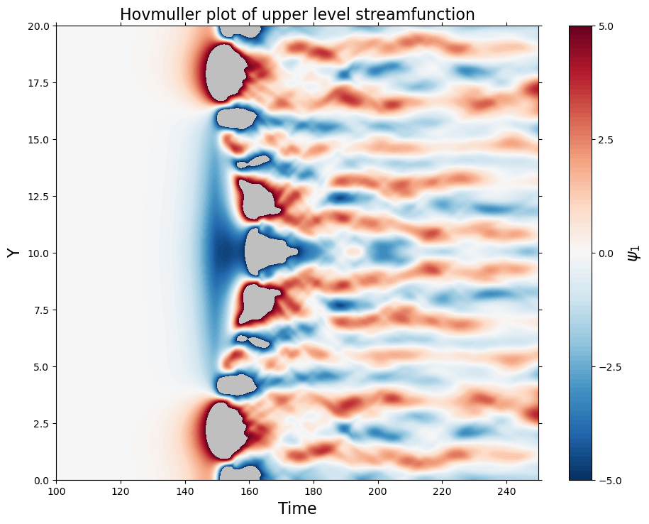

""""
Nicholas Lutsko -- AOS Program, Princeton
Zonally truncated 2-layer QG model after Held & Panetta 1988
Only keep 1 zonal wavenumber, default is k=0.7
The non-linear terms are calculated using the
Orszag (1971) alias-free transform method. Leapfrog
time-stepping is used for all terms except the
hyperdiffusion.
Here it just tracks the growth rate, the
domain-mean energy and the domain-mean enstrophy,
and also plots the zonal-mean streamfunction as a
function of time, but it can be easily modified to
do other things.
Last updated -- July 12th 2016
"""
import numpy as np
import math
import matplotlib.pylab as plt
from random import random
#######################################################
# First declare some parameters, arrays, etc.
opt = 3 # 1 = just the linear parts, 2 = just the nonlinear parts, 3 = full model
N = 256 #size of spectral decomposition
L = 20. #size of domain -- stick to multiples of 10
nu = pow( 10., -3. ) #viscous dissipation
km = 0.3 #Ekman friction -- setting in PH88 is 0.3
kt = 0.067 #radiative damping -- value in PH88 is 0.067
bet = 0.15 #beta -- value in PH88 is 0.15
pi = math.pi #always useful
#Wavenumbers:
#Zonal wavenumbers:
MK = int(0.7 * L ) #Wavenumber to keep
zk = np.array([0., 0.7])
#Meridional wavenumbers:
ll = np.fft.fftfreq( N , L / 256. )
x = np.linspace( 0, 2. * pi * L, N ) #domain size
dt = 0.025 #Timestep
ts = 10000 #Total timesteps
lim = 2000 #Start taking averages from here
#Spectral arrays:
#Only need 3 time-steps
psic_1 = np.zeros( ( ( 3 , 2 , N ) ) ).astype( complex )
psic_2 = np.zeros( ( ( 3 , 2 , N ) ) ).astype( complex )
qc_1 = np.zeros( ( ( 3 , 2 , N ) ) ).astype( complex )
qc_2 = np.zeros( ( ( 3 , 2 , N ) ) ).astype( complex )
#Array for saving zonal-mean upper-level streamfunction
psi_1 = np.zeros( (ts, N ) )
#Track energy, enstrophy and growth rate:
en = np.zeros( ts )
ens = np.zeros( ts )
gr = np.zeros( ( int(ts - lim), int(N / 2) ) )
#######################################################
# Some functions
def ft( psi ):
"""Fourier Transform and keep relevant coefficients"""
temp1 = np.fft.fft2( psi )
return temp1[: , 0 ] / N / N , temp1[:, MK ] / N / N
def ift( psic ):
"""Inverse Fourier Transform"""
temp1 = np.fft.ifft( psic[ 0 ] )
temp2 = np.fft.ifft( psic[ 1 ] )
ps = temp1[ : , np.newaxis ] + temp2 [ : , np.newaxis ] * np.exp( 1.j * zk[1 ] * x[:] ) + ( temp2[ : , np.newaxis ].conjugate() ) * np.exp( -1.j * zk[1] * x[:] )
#psi(x,y,t) = psi_0(y,t) + (psi_k(y,t)exp(ikx) + c.c)
return ps
def ptq(ps1, ps2):
"""Calculate PV"""
q1 = -(ll[np.newaxis, :] ** 2 + zk[:, np.newaxis] ** 2 ) * ps1 - (ps1 - ps2) / 2. # -(k^2 + l^2) * psi_1 -0.5*(psi_1-psi_2)
q2 = -(ll[np.newaxis, :] ** 2 + zk[:, np.newaxis] ** 2 ) * ps2 + (ps1 - ps2) / 2. # -(k^2 + l^2) * psi_2 +0.5*(psi_1-psi_2)
return q1, q2
def qtp(q1_s, q2_s):
"""Invert PV"""
psi_bt = -(q1_s + q2_s) / (ll[np.newaxis, :] ** 2 + zk[:, np.newaxis] ** 2) / 2. # (psi_1 + psi_2)/2
psi_bc = -(q1_s - q2_s) / (ll[np.newaxis, :] ** 2 + zk[:, np.newaxis] ** 2 + 1.) / 2. # (psi_1 - psi_2)/2
psi_bt[0, 0] = 0.
psi1 = psi_bt + psi_bc
psi2 = psi_bt - psi_bc
return psi1, psi2
def calcnl( psi, qc):
""""Calculate dealiased non-linear terms"""
ex = int(N * 3 / 2) #3/2*the total wavenumbers
temp1 = np.zeros( ex ).astype( complex )
temp2 = np.zeros( ex ).astype( complex )
temp4 = np.zeros( N ).astype( complex ) #Final array
#Pad values:
temp1[:int(N/2)] = psi[:int(N/2)]
temp1[ex-int(N/2):] = psi[int(N/2):]
temp2[:int(N/2)] = qc[:int(N/2)]
temp2[ex-int(N/2):] = qc[int(N/2):]
#Fourier transform product, normalize, and filter:
temp3 = np.fft.fft( np.fft.ifft( temp1 ) * np.fft.ifft( temp2 ) ) * 3. / 2.
temp4[:int(N/2)] = temp3[:int(N/2)]
temp4[int(N/2):] = temp3[ex-int(N/2):]
return temp4
def nlterm(j, wpsi, psi, wqc, qc):
""""Calculate non-linear terms"""
if j == 0:
NL1 = calcnl(wpsi, 1.j * ll * qc) #ik psi_k * dq_k^*/dy
NL2 = calcnl(qc, 1.j * ll * wpsi) #ik q_k^* * d(psi_k)/dy
NL3 = calcnl(psi, 1.j * ll * wqc) #ik psi_k^* * dq_k/dy
NL4 = calcnl(wqc , 1.j * ll * psi) #ik q_k * d(psi_k^*)/dy
return (1.j * zk[1] * (NL4 + NL3 - NL2 - NL1)).real
else:
NL1 = calcnl(qc, 1.j * ll * wpsi) #q_k * d(psi_0)/dy
NL2 = calcnl(psi, 1.j * ll * wqc) #psi_k * d(q_0)/dy
return 1.j * zk[1] * ( NL1 - NL2 )
def lterm(lay, k1, qc, psi, opsi, upsi, j):
""""Calculate linear terms"""
if lay == 1:
return - 1.j * k1 * qc - 1.j * k1 * ( bet + 0.5 ) * psi + kt * (psi - upsi)
else:
return - 1.j * k1 * ( bet - 0.5 ) * psi + km * ((k1 + ll) ** 2) * opsi + kt * (psi - upsi)
#######################################################
# Initial conditions:
#Make ICs:
from random import random
psic_1[0] = [ [ random() * .0001 for i in range(N) ] for j in range(2) ]
psic_2[0] = [ [ random() * .0001 for i in range(N) ] for j in range(2) ]
psic_1[0, 0, 0 ] = 0.
psic_2[0, 0, 0 ] = 0.
#Transfer values:
psic_1[ 1 , : , : ] = psic_1[ 0 , : , : ]
psic_2[ 1 , : , : ] = psic_2[ 0 , : , : ]
#Calculate initial PV
qc_1[0], qc_2[0] = ptq(psic_1[0], psic_2[0])
qc_1[1], qc_2[1] = ptq(psic_1[1], psic_2[1])
#Take first norms:
en[0] = np.linalg.norm(psic_1[0, 0] + psic_1[0, 1] ) #Energy
ens[0] = np.linalg.norm(qc_1[0, 1] + qc_1[0, 0] ) #Enstrophy
#######################################################
# Time-stepping functions
def fs(ovar, rhs, det, jk):
"""Forward Step: q^t-1 / ( 1 + 2. * dt * nu * (k^4 + l^4 ) ) + RHS"""
mult = det / ( 1. + det * nu * (zk[jk] ** 4 + ll ** 4) )
return mult * (ovar / det + rhs)
def lf(oovar, rhs, det, jk):
"""Leap frog timestepping: q^t-1 / ( 1 + 2. * dt * nu * (k^4 + l^4 ) ) + RHS"""
mult = 2. * det / ( 1. + 2. * det * nu * (zk[jk] ** 4 + ll ** 4) )
return mult * (oovar / det / 2. + rhs)
g = 0.04 #filter coefficient
def filt(var, ovar, nvar):
"""Leapfrog filtering"""
return var + g * (ovar - 2. * var + nvar )
#######################################################
# Main time-stepping loop
print ("Timestep:", 0)
forc1 = np.zeros(N).astype(complex)
forc2 = np.zeros(N).astype(complex)
nl1 = np.zeros(N).astype(complex)
nl2 = np.zeros(N).astype(complex)
#Timestepping:
for i in range(1, ts):
if i % 10 == 0:
print ("Timestep:", i, " / ", ts)
#Calculate conjugates:
qcc_1 = np.fft.fft( np.fft.ifft(qc_1[1, 1] ).conjugate() )
qcc_2 = np.fft.fft( np.fft.ifft(qc_2[1, 1] ).conjugate() )
pcc_1 = np.fft.fft( np.fft.ifft(psic_1[1, 1] ).conjugate() )
pcc_2 = np.fft.fft( np.fft.ifft(psic_2[1, 1] ).conjugate() )
#Calculate timestep
for j in range(2):
if opt > 1:
if j == 0:
nl1 = nlterm(j, psic_1[1, 1], pcc_1, qc_1[1, 1], qcc_1)
nl2 = nlterm(j, psic_2[1, 1], pcc_2, qc_2[1, 1], qcc_2)
else:
nl1 = nlterm(j, psic_1[1, 0], psic_1[1, 1], qc_1[1, 0], qc_1[1, 1])
nl2 = nlterm(j, psic_2[1, 0], psic_2[1, 1], qc_2[1, 0], qc_2[1, 1])
if opt != 2:
forc1[:] = lterm(1, zk[j], qc_1[1, j, :], psic_1[1, j, :], psic_1[0, j, :], psic_2[1, j, :], j)
forc2[:] = lterm(2, zk[j], qc_2[1, j, :], psic_2[1, j, :], psic_2[0, j, :], psic_1[1, j, :], j)
rhs1 = nl1[:] + forc1[:]
rhs2 = nl2[:] + forc2[:]
if i == 1:
#Forward step
qc_1[2, j] = fs(qc_1[1, j, :], rhs1[:], dt, j)
qc_2[2, j] = fs(qc_2[1, j, :], rhs2[:], dt, j)
else:
#Leapfrog step
qc_1[2, j, :] = lf(qc_1[0, j, :], rhs1[:], dt, j)
qc_2[2, j, :] = lf(qc_2[0, j, :], rhs2[:], dt, j)
if i > 1:
#Leapfrog filter
qc_1[1, j] = filt(qc_1[1, j], qc_1[0, j], qc_1[2, j])
qc_2[1, j] = filt(qc_2[1, j], qc_2[0, j], qc_2[2, j])
#Invert:
psic_1[1], psic_2[1] = qtp(qc_1[2], qc_2[2] )
psic_1[0], psic_2[0] = qtp(qc_1[1], qc_2[1] )
#Growth rate, norms
if i > lim:
gr[i-lim, :] = np.log( abs( psic_1[1, 1, :int(N/2)] ) / abs( psic_1[0, 1, :int(N/2)] ) ) / dt #Growth rate
en[i] = np.linalg.norm(psic_1[1, 0] + psic_1[1, 1] ) #Energy
ens[i] = np.linalg.norm(qc_1[1, 0] + qc_1[1, 1] ) #Enstrophy
psi_1[i, :] = np.mean( ift( psic_1[1] ), axis = 1 ).real
#Transfer values:
qc_1[0, :, :] = qc_1[1, :, :]
qc_2[0, :, :] = qc_2[1, :, :]
qc_1[1, :, :] = qc_1[2, :, :]
qc_2[1, :, :] = qc_2[2, :, :]
time = np.arange(0, ts * dt, dt)
y = np.linspace( 0., L, 256 )
v = np.linspace( -5., 5., 100 )
fig = plt.figure( figsize = (10, 8) )
plt.subplots_adjust( left = 0.1, right = 0.95, bottom = 0.1, top = 0.9 )
ax = plt.subplot( 1, 1, 1 )
plt.title("Hovmuller plot of upper level streamfunction", fontsize = 16)
plt.contourf( time, y, np.swapaxes( psi_1, 0, 1), v, cmap = plt.cm.RdBu_r )
cbar = plt.colorbar(ticks = [-5., -2.5, 0., 2.5, 5.])
cbar.set_label(r"$\psi_1$", fontsize = 16 )
plt.xlabel("Time", fontsize = 16)
plt.ylabel("Y", fontsize = 16)
ax.tick_params(axis = 'x', which = 'both', direction = 'out', top = 'off')
ax.tick_params(axis = 'y', which = 'both', direction = 'out', right = 'off')
plt.xlim([100., 250.])
ax.patch.set_facecolor('k')
ax.patch.set_alpha(0.25)
plt.savefig("images/upper_level_streamfunction.png")
plt.show()
Timestep: 0
Timestep: 10 / 10000
Timestep: 20 / 10000
Timestep: 30 / 10000
Timestep: 40 / 10000
Timestep: 50 / 10000
Timestep: 60 / 10000
Timestep: 70 / 10000
Timestep: 80 / 10000
Timestep: 90 / 10000
Timestep: 100 / 10000
Timestep: 110 / 10000
Timestep: 120 / 10000
Timestep: 130 / 10000
Timestep: 140 / 10000
Timestep: 150 / 10000
Timestep: 160 / 10000
Timestep: 170 / 10000
Timestep: 180 / 10000
Timestep: 190 / 10000
Timestep: 200 / 10000
Timestep: 210 / 10000
Timestep: 220 / 10000
Timestep: 230 / 10000
Timestep: 240 / 10000
Timestep: 250 / 10000
/var/folders/x1/nb2x5h5j08b2xx8xkc64r43m0000gn/T/ipykernel_33034/2341826970.py:93: RuntimeWarning: divide by zero encountered in divide
psi_bt = -(q1_s + q2_s) / (ll[np.newaxis, :] ** 2 + zk[:, np.newaxis] ** 2) / 2. # (psi_1 + psi_2)/2
/var/folders/x1/nb2x5h5j08b2xx8xkc64r43m0000gn/T/ipykernel_33034/2341826970.py:93: RuntimeWarning: invalid value encountered in divide
psi_bt = -(q1_s + q2_s) / (ll[np.newaxis, :] ** 2 + zk[:, np.newaxis] ** 2) / 2. # (psi_1 + psi_2)/2
Timestep: 260 / 10000
Timestep: 270 / 10000
Timestep: 280 / 10000
Timestep: 290 / 10000
Timestep: 300 / 10000
Timestep: 310 / 10000
Timestep: 320 / 10000
Timestep: 330 / 10000
Timestep: 340 / 10000
Timestep: 350 / 10000
Timestep: 360 / 10000
Timestep: 370 / 10000
Timestep: 380 / 10000
Timestep: 390 / 10000
Timestep: 400 / 10000
Timestep: 410 / 10000
Timestep: 420 / 10000
Timestep: 430 / 10000
Timestep: 440 / 10000
Timestep: 450 / 10000
Timestep: 460 / 10000
Timestep: 470 / 10000
Timestep: 480 / 10000
Timestep: 490 / 10000
Timestep: 500 / 10000
Timestep: 510 / 10000
Timestep: 520 / 10000
Timestep: 530 / 10000
Timestep: 540 / 10000
Timestep: 550 / 10000
Timestep: 560 / 10000
Timestep: 570 / 10000
Timestep: 580 / 10000
Timestep: 590 / 10000
Timestep: 600 / 10000
Timestep: 610 / 10000
Timestep: 620 / 10000
Timestep: 630 / 10000
Timestep: 640 / 10000
Timestep: 650 / 10000
Timestep: 660 / 10000
Timestep: 670 / 10000
Timestep: 680 / 10000
Timestep: 690 / 10000
Timestep: 700 / 10000
Timestep: 710 / 10000
Timestep: 720 / 10000
Timestep: 730 / 10000
Timestep: 740 / 10000
Timestep: 750 / 10000
Timestep: 760 / 10000
Timestep: 770 / 10000
Timestep: 780 / 10000
Timestep: 790 / 10000
Timestep: 800 / 10000
Timestep: 810 / 10000
Timestep: 820 / 10000
Timestep: 830 / 10000
Timestep: 840 / 10000
Timestep: 850 / 10000
Timestep: 860 / 10000
Timestep: 870 / 10000
Timestep: 880 / 10000
Timestep: 890 / 10000
Timestep: 900 / 10000
Timestep: 910 / 10000
Timestep: 920 / 10000
Timestep: 930 / 10000
Timestep: 940 / 10000
Timestep: 950 / 10000
Timestep: 960 / 10000
Timestep: 970 / 10000
Timestep: 980 / 10000
Timestep: 990 / 10000
Timestep: 1000 / 10000
Timestep: 1010 / 10000
Timestep: 1020 / 10000
Timestep: 1030 / 10000
Timestep: 1040 / 10000
Timestep: 1050 / 10000
Timestep: 1060 / 10000
Timestep: 1070 / 10000
Timestep: 1080 / 10000
Timestep: 1090 / 10000
Timestep: 1100 / 10000
Timestep: 1110 / 10000
Timestep: 1120 / 10000
Timestep: 1130 / 10000
Timestep: 1140 / 10000
Timestep: 1150 / 10000
Timestep: 1160 / 10000
Timestep: 1170 / 10000
Timestep: 1180 / 10000
Timestep: 1190 / 10000
Timestep: 1200 / 10000
Timestep: 1210 / 10000
Timestep: 1220 / 10000
Timestep: 1230 / 10000
Timestep: 1240 / 10000
Timestep: 1250 / 10000
Timestep: 1260 / 10000
Timestep: 1270 / 10000
Timestep: 1280 / 10000
Timestep: 1290 / 10000
Timestep: 1300 / 10000
Timestep: 1310 / 10000
Timestep: 1320 / 10000
Timestep: 1330 / 10000
Timestep: 1340 / 10000
Timestep: 1350 / 10000
Timestep: 1360 / 10000
Timestep: 1370 / 10000
Timestep: 1380 / 10000
Timestep: 1390 / 10000
Timestep: 1400 / 10000
Timestep: 1410 / 10000
Timestep: 1420 / 10000
Timestep: 1430 / 10000
Timestep: 1440 / 10000
Timestep: 1450 / 10000
Timestep: 1460 / 10000
Timestep: 1470 / 10000
Timestep: 1480 / 10000
Timestep: 1490 / 10000
Timestep: 1500 / 10000
Timestep: 1510 / 10000
Timestep: 1520 / 10000
Timestep: 1530 / 10000
Timestep: 1540 / 10000
Timestep: 1550 / 10000
Timestep: 1560 / 10000
Timestep: 1570 / 10000
Timestep: 1580 / 10000
Timestep: 1590 / 10000
Timestep: 1600 / 10000
Timestep: 1610 / 10000
Timestep: 1620 / 10000
Timestep: 1630 / 10000
Timestep: 1640 / 10000
Timestep: 1650 / 10000
Timestep: 1660 / 10000
Timestep: 1670 / 10000
Timestep: 1680 / 10000
Timestep: 1690 / 10000
Timestep: 1700 / 10000
Timestep: 1710 / 10000
Timestep: 1720 / 10000
Timestep: 1730 / 10000
Timestep: 1740 / 10000
Timestep: 1750 / 10000
Timestep: 1760 / 10000
Timestep: 1770 / 10000
Timestep: 1780 / 10000
Timestep: 1790 / 10000
Timestep: 1800 / 10000
Timestep: 1810 / 10000
Timestep: 1820 / 10000
Timestep: 1830 / 10000
Timestep: 1840 / 10000
Timestep: 1850 / 10000
Timestep: 1860 / 10000
Timestep: 1870 / 10000
Timestep: 1880 / 10000
Timestep: 1890 / 10000
Timestep: 1900 / 10000
Timestep: 1910 / 10000
Timestep: 1920 / 10000
Timestep: 1930 / 10000
Timestep: 1940 / 10000
Timestep: 1950 / 10000
Timestep: 1960 / 10000
Timestep: 1970 / 10000
Timestep: 1980 / 10000
Timestep: 1990 / 10000
Timestep: 2000 / 10000
Timestep: 2010 / 10000
Timestep: 2020 / 10000
Timestep: 2030 / 10000
Timestep: 2040 / 10000
Timestep: 2050 / 10000
Timestep: 2060 / 10000
Timestep: 2070 / 10000
Timestep: 2080 / 10000
Timestep: 2090 / 10000
Timestep: 2100 / 10000
Timestep: 2110 / 10000
Timestep: 2120 / 10000
Timestep: 2130 / 10000
Timestep: 2140 / 10000
Timestep: 2150 / 10000
Timestep: 2160 / 10000
Timestep: 2170 / 10000
Timestep: 2180 / 10000
Timestep: 2190 / 10000
Timestep: 2200 / 10000
Timestep: 2210 / 10000
Timestep: 2220 / 10000
Timestep: 2230 / 10000
Timestep: 2240 / 10000
Timestep: 2250 / 10000
Timestep: 2260 / 10000
Timestep: 2270 / 10000
Timestep: 2280 / 10000
Timestep: 2290 / 10000
Timestep: 2300 / 10000
Timestep: 2310 / 10000
Timestep: 2320 / 10000
Timestep: 2330 / 10000
Timestep: 2340 / 10000
Timestep: 2350 / 10000
Timestep: 2360 / 10000
Timestep: 2370 / 10000
Timestep: 2380 / 10000
Timestep: 2390 / 10000
Timestep: 2400 / 10000
Timestep: 2410 / 10000
Timestep: 2420 / 10000
Timestep: 2430 / 10000
Timestep: 2440 / 10000
Timestep: 2450 / 10000
Timestep: 2460 / 10000
Timestep: 2470 / 10000
Timestep: 2480 / 10000
Timestep: 2490 / 10000
Timestep: 2500 / 10000
Timestep: 2510 / 10000
Timestep: 2520 / 10000
Timestep: 2530 / 10000
Timestep: 2540 / 10000
Timestep: 2550 / 10000
Timestep: 2560 / 10000
Timestep: 2570 / 10000
Timestep: 2580 / 10000
Timestep: 2590 / 10000
Timestep: 2600 / 10000
Timestep: 2610 / 10000
Timestep: 2620 / 10000
Timestep: 2630 / 10000
Timestep: 2640 / 10000
Timestep: 2650 / 10000
Timestep: 2660 / 10000
Timestep: 2670 / 10000
Timestep: 2680 / 10000
Timestep: 2690 / 10000
Timestep: 2700 / 10000
Timestep: 2710 / 10000
Timestep: 2720 / 10000
Timestep: 2730 / 10000
Timestep: 2740 / 10000
Timestep: 2750 / 10000
Timestep: 2760 / 10000
Timestep: 2770 / 10000
Timestep: 2780 / 10000
Timestep: 2790 / 10000
Timestep: 2800 / 10000
Timestep: 2810 / 10000
Timestep: 2820 / 10000
Timestep: 2830 / 10000
Timestep: 2840 / 10000
Timestep: 2850 / 10000
Timestep: 2860 / 10000
Timestep: 2870 / 10000
Timestep: 2880 / 10000
Timestep: 2890 / 10000
Timestep: 2900 / 10000
Timestep: 2910 / 10000
Timestep: 2920 / 10000
Timestep: 2930 / 10000
Timestep: 2940 / 10000
Timestep: 2950 / 10000
Timestep: 2960 / 10000
Timestep: 2970 / 10000
Timestep: 2980 / 10000
Timestep: 2990 / 10000
Timestep: 3000 / 10000
Timestep: 3010 / 10000
Timestep: 3020 / 10000
Timestep: 3030 / 10000
Timestep: 3040 / 10000
Timestep: 3050 / 10000
Timestep: 3060 / 10000
Timestep: 3070 / 10000
Timestep: 3080 / 10000
Timestep: 3090 / 10000
Timestep: 3100 / 10000
Timestep: 3110 / 10000
Timestep: 3120 / 10000
Timestep: 3130 / 10000
Timestep: 3140 / 10000
Timestep: 3150 / 10000
Timestep: 3160 / 10000
Timestep: 3170 / 10000
Timestep: 3180 / 10000
Timestep: 3190 / 10000
Timestep: 3200 / 10000
Timestep: 3210 / 10000
Timestep: 3220 / 10000
Timestep: 3230 / 10000
Timestep: 3240 / 10000
Timestep: 3250 / 10000
Timestep: 3260 / 10000
Timestep: 3270 / 10000
Timestep: 3280 / 10000
Timestep: 3290 / 10000
Timestep: 3300 / 10000
Timestep: 3310 / 10000
Timestep: 3320 / 10000
Timestep: 3330 / 10000
Timestep: 3340 / 10000
Timestep: 3350 / 10000
Timestep: 3360 / 10000
Timestep: 3370 / 10000
Timestep: 3380 / 10000
Timestep: 3390 / 10000
Timestep: 3400 / 10000
Timestep: 3410 / 10000
Timestep: 3420 / 10000
Timestep: 3430 / 10000
Timestep: 3440 / 10000
Timestep: 3450 / 10000
Timestep: 3460 / 10000
Timestep: 3470 / 10000
Timestep: 3480 / 10000
Timestep: 3490 / 10000
Timestep: 3500 / 10000
Timestep: 3510 / 10000
Timestep: 3520 / 10000
Timestep: 3530 / 10000
Timestep: 3540 / 10000
Timestep: 3550 / 10000
Timestep: 3560 / 10000
Timestep: 3570 / 10000
Timestep: 3580 / 10000
Timestep: 3590 / 10000
Timestep: 3600 / 10000
Timestep: 3610 / 10000
Timestep: 3620 / 10000
Timestep: 3630 / 10000
Timestep: 3640 / 10000
Timestep: 3650 / 10000
Timestep: 3660 / 10000
Timestep: 3670 / 10000
Timestep: 3680 / 10000
Timestep: 3690 / 10000
Timestep: 3700 / 10000
Timestep: 3710 / 10000
Timestep: 3720 / 10000
Timestep: 3730 / 10000
Timestep: 3740 / 10000
Timestep: 3750 / 10000
Timestep: 3760 / 10000
Timestep: 3770 / 10000
Timestep: 3780 / 10000
Timestep: 3790 / 10000
Timestep: 3800 / 10000
Timestep: 3810 / 10000
Timestep: 3820 / 10000
Timestep: 3830 / 10000
Timestep: 3840 / 10000
Timestep: 3850 / 10000
Timestep: 3860 / 10000
Timestep: 3870 / 10000
Timestep: 3880 / 10000
Timestep: 3890 / 10000
Timestep: 3900 / 10000
Timestep: 3910 / 10000
Timestep: 3920 / 10000
Timestep: 3930 / 10000
Timestep: 3940 / 10000
Timestep: 3950 / 10000
Timestep: 3960 / 10000
Timestep: 3970 / 10000
Timestep: 3980 / 10000
Timestep: 3990 / 10000
Timestep: 4000 / 10000
Timestep: 4010 / 10000
Timestep: 4020 / 10000
Timestep: 4030 / 10000
Timestep: 4040 / 10000
Timestep: 4050 / 10000
Timestep: 4060 / 10000
Timestep: 4070 / 10000
Timestep: 4080 / 10000
Timestep: 4090 / 10000
Timestep: 4100 / 10000
Timestep: 4110 / 10000
Timestep: 4120 / 10000
Timestep: 4130 / 10000
Timestep: 4140 / 10000
Timestep: 4150 / 10000
Timestep: 4160 / 10000
Timestep: 4170 / 10000
Timestep: 4180 / 10000
Timestep: 4190 / 10000
Timestep: 4200 / 10000
Timestep: 4210 / 10000
Timestep: 4220 / 10000
Timestep: 4230 / 10000
Timestep: 4240 / 10000
Timestep: 4250 / 10000
Timestep: 4260 / 10000
Timestep: 4270 / 10000
Timestep: 4280 / 10000
Timestep: 4290 / 10000
Timestep: 4300 / 10000
Timestep: 4310 / 10000
Timestep: 4320 / 10000
Timestep: 4330 / 10000
Timestep: 4340 / 10000
Timestep: 4350 / 10000
Timestep: 4360 / 10000
Timestep: 4370 / 10000
Timestep: 4380 / 10000
Timestep: 4390 / 10000
Timestep: 4400 / 10000
Timestep: 4410 / 10000
Timestep: 4420 / 10000
Timestep: 4430 / 10000
Timestep: 4440 / 10000
Timestep: 4450 / 10000
Timestep: 4460 / 10000
Timestep: 4470 / 10000
Timestep: 4480 / 10000
Timestep: 4490 / 10000
Timestep: 4500 / 10000
Timestep: 4510 / 10000
Timestep: 4520 / 10000
Timestep: 4530 / 10000
Timestep: 4540 / 10000
Timestep: 4550 / 10000
Timestep: 4560 / 10000
Timestep: 4570 / 10000
Timestep: 4580 / 10000
Timestep: 4590 / 10000
Timestep: 4600 / 10000
Timestep: 4610 / 10000
Timestep: 4620 / 10000
Timestep: 4630 / 10000
Timestep: 4640 / 10000
Timestep: 4650 / 10000
Timestep: 4660 / 10000
Timestep: 4670 / 10000
Timestep: 4680 / 10000
Timestep: 4690 / 10000
Timestep: 4700 / 10000
Timestep: 4710 / 10000
Timestep: 4720 / 10000
Timestep: 4730 / 10000
Timestep: 4740 / 10000
Timestep: 4750 / 10000
Timestep: 4760 / 10000
Timestep: 4770 / 10000
Timestep: 4780 / 10000
Timestep: 4790 / 10000
Timestep: 4800 / 10000
Timestep: 4810 / 10000
Timestep: 4820 / 10000
Timestep: 4830 / 10000
Timestep: 4840 / 10000
Timestep: 4850 / 10000
Timestep: 4860 / 10000
Timestep: 4870 / 10000
Timestep: 4880 / 10000
Timestep: 4890 / 10000
Timestep: 4900 / 10000
Timestep: 4910 / 10000
Timestep: 4920 / 10000
Timestep: 4930 / 10000
Timestep: 4940 / 10000
Timestep: 4950 / 10000
Timestep: 4960 / 10000
Timestep: 4970 / 10000
Timestep: 4980 / 10000
Timestep: 4990 / 10000
Timestep: 5000 / 10000
Timestep: 5010 / 10000
Timestep: 5020 / 10000
Timestep: 5030 / 10000
Timestep: 5040 / 10000
Timestep: 5050 / 10000
Timestep: 5060 / 10000
Timestep: 5070 / 10000
Timestep: 5080 / 10000
Timestep: 5090 / 10000
Timestep: 5100 / 10000
Timestep: 5110 / 10000
Timestep: 5120 / 10000
Timestep: 5130 / 10000
Timestep: 5140 / 10000
Timestep: 5150 / 10000
Timestep: 5160 / 10000
Timestep: 5170 / 10000
Timestep: 5180 / 10000
Timestep: 5190 / 10000
Timestep: 5200 / 10000
Timestep: 5210 / 10000
Timestep: 5220 / 10000
Timestep: 5230 / 10000
Timestep: 5240 / 10000
Timestep: 5250 / 10000
Timestep: 5260 / 10000
Timestep: 5270 / 10000
Timestep: 5280 / 10000
Timestep: 5290 / 10000
Timestep: 5300 / 10000
Timestep: 5310 / 10000
Timestep: 5320 / 10000
Timestep: 5330 / 10000
Timestep: 5340 / 10000
Timestep: 5350 / 10000
Timestep: 5360 / 10000
Timestep: 5370 / 10000
Timestep: 5380 / 10000
Timestep: 5390 / 10000
Timestep: 5400 / 10000
Timestep: 5410 / 10000
Timestep: 5420 / 10000
Timestep: 5430 / 10000
Timestep: 5440 / 10000
Timestep: 5450 / 10000
Timestep: 5460 / 10000
Timestep: 5470 / 10000
Timestep: 5480 / 10000
Timestep: 5490 / 10000
Timestep: 5500 / 10000
Timestep: 5510 / 10000
Timestep: 5520 / 10000
Timestep: 5530 / 10000
Timestep: 5540 / 10000
Timestep: 5550 / 10000
Timestep: 5560 / 10000
Timestep: 5570 / 10000
Timestep: 5580 / 10000
Timestep: 5590 / 10000
Timestep: 5600 / 10000
Timestep: 5610 / 10000
Timestep: 5620 / 10000
Timestep: 5630 / 10000
Timestep: 5640 / 10000
Timestep: 5650 / 10000
Timestep: 5660 / 10000
Timestep: 5670 / 10000
Timestep: 5680 / 10000
Timestep: 5690 / 10000
Timestep: 5700 / 10000
Timestep: 5710 / 10000
Timestep: 5720 / 10000
Timestep: 5730 / 10000
Timestep: 5740 / 10000
Timestep: 5750 / 10000
Timestep: 5760 / 10000
Timestep: 5770 / 10000
Timestep: 5780 / 10000
Timestep: 5790 / 10000
Timestep: 5800 / 10000
Timestep: 5810 / 10000
Timestep: 5820 / 10000
Timestep: 5830 / 10000
Timestep: 5840 / 10000
Timestep: 5850 / 10000
Timestep: 5860 / 10000
Timestep: 5870 / 10000
Timestep: 5880 / 10000
Timestep: 5890 / 10000
Timestep: 5900 / 10000
Timestep: 5910 / 10000
Timestep: 5920 / 10000
Timestep: 5930 / 10000
Timestep: 5940 / 10000
Timestep: 5950 / 10000
Timestep: 5960 / 10000
Timestep: 5970 / 10000
Timestep: 5980 / 10000
Timestep: 5990 / 10000
Timestep: 6000 / 10000
Timestep: 6010 / 10000
Timestep: 6020 / 10000
Timestep: 6030 / 10000
Timestep: 6040 / 10000
Timestep: 6050 / 10000
Timestep: 6060 / 10000
Timestep: 6070 / 10000
Timestep: 6080 / 10000
Timestep: 6090 / 10000
Timestep: 6100 / 10000
Timestep: 6110 / 10000
Timestep: 6120 / 10000
Timestep: 6130 / 10000
Timestep: 6140 / 10000
Timestep: 6150 / 10000
Timestep: 6160 / 10000
Timestep: 6170 / 10000
Timestep: 6180 / 10000
Timestep: 6190 / 10000
Timestep: 6200 / 10000
Timestep: 6210 / 10000
Timestep: 6220 / 10000
Timestep: 6230 / 10000
Timestep: 6240 / 10000
Timestep: 6250 / 10000
Timestep: 6260 / 10000
Timestep: 6270 / 10000
Timestep: 6280 / 10000
Timestep: 6290 / 10000
Timestep: 6300 / 10000
Timestep: 6310 / 10000
Timestep: 6320 / 10000
Timestep: 6330 / 10000
Timestep: 6340 / 10000
Timestep: 6350 / 10000
Timestep: 6360 / 10000
Timestep: 6370 / 10000
Timestep: 6380 / 10000
Timestep: 6390 / 10000
Timestep: 6400 / 10000
Timestep: 6410 / 10000
Timestep: 6420 / 10000
Timestep: 6430 / 10000
Timestep: 6440 / 10000
Timestep: 6450 / 10000
Timestep: 6460 / 10000
Timestep: 6470 / 10000
Timestep: 6480 / 10000
Timestep: 6490 / 10000
Timestep: 6500 / 10000
Timestep: 6510 / 10000
Timestep: 6520 / 10000
Timestep: 6530 / 10000
Timestep: 6540 / 10000
Timestep: 6550 / 10000
Timestep: 6560 / 10000
Timestep: 6570 / 10000
Timestep: 6580 / 10000
Timestep: 6590 / 10000
Timestep: 6600 / 10000
Timestep: 6610 / 10000
Timestep: 6620 / 10000
Timestep: 6630 / 10000
Timestep: 6640 / 10000
Timestep: 6650 / 10000
Timestep: 6660 / 10000
Timestep: 6670 / 10000
Timestep: 6680 / 10000
Timestep: 6690 / 10000
Timestep: 6700 / 10000
Timestep: 6710 / 10000
Timestep: 6720 / 10000
Timestep: 6730 / 10000
Timestep: 6740 / 10000
Timestep: 6750 / 10000
Timestep: 6760 / 10000
Timestep: 6770 / 10000
Timestep: 6780 / 10000
Timestep: 6790 / 10000
Timestep: 6800 / 10000
Timestep: 6810 / 10000
Timestep: 6820 / 10000
Timestep: 6830 / 10000
Timestep: 6840 / 10000
Timestep: 6850 / 10000
Timestep: 6860 / 10000
Timestep: 6870 / 10000
Timestep: 6880 / 10000
Timestep: 6890 / 10000
Timestep: 6900 / 10000
Timestep: 6910 / 10000
Timestep: 6920 / 10000
Timestep: 6930 / 10000
Timestep: 6940 / 10000
Timestep: 6950 / 10000
Timestep: 6960 / 10000
Timestep: 6970 / 10000
Timestep: 6980 / 10000
Timestep: 6990 / 10000
Timestep: 7000 / 10000
Timestep: 7010 / 10000
Timestep: 7020 / 10000
Timestep: 7030 / 10000
Timestep: 7040 / 10000
Timestep: 7050 / 10000
Timestep: 7060 / 10000
Timestep: 7070 / 10000
Timestep: 7080 / 10000
Timestep: 7090 / 10000
Timestep: 7100 / 10000
Timestep: 7110 / 10000
Timestep: 7120 / 10000
Timestep: 7130 / 10000
Timestep: 7140 / 10000
Timestep: 7150 / 10000
Timestep: 7160 / 10000
Timestep: 7170 / 10000
Timestep: 7180 / 10000
Timestep: 7190 / 10000
Timestep: 7200 / 10000
Timestep: 7210 / 10000
Timestep: 7220 / 10000
Timestep: 7230 / 10000
Timestep: 7240 / 10000
Timestep: 7250 / 10000
Timestep: 7260 / 10000
Timestep: 7270 / 10000
Timestep: 7280 / 10000
Timestep: 7290 / 10000
Timestep: 7300 / 10000
Timestep: 7310 / 10000
Timestep: 7320 / 10000
Timestep: 7330 / 10000
Timestep: 7340 / 10000
Timestep: 7350 / 10000
Timestep: 7360 / 10000
Timestep: 7370 / 10000
Timestep: 7380 / 10000
Timestep: 7390 / 10000
Timestep: 7400 / 10000
Timestep: 7410 / 10000
Timestep: 7420 / 10000
Timestep: 7430 / 10000
Timestep: 7440 / 10000
Timestep: 7450 / 10000
Timestep: 7460 / 10000
Timestep: 7470 / 10000
Timestep: 7480 / 10000
Timestep: 7490 / 10000
Timestep: 7500 / 10000
Timestep: 7510 / 10000
Timestep: 7520 / 10000
Timestep: 7530 / 10000
Timestep: 7540 / 10000
Timestep: 7550 / 10000
Timestep: 7560 / 10000
Timestep: 7570 / 10000
Timestep: 7580 / 10000
Timestep: 7590 / 10000
Timestep: 7600 / 10000
Timestep: 7610 / 10000
Timestep: 7620 / 10000
Timestep: 7630 / 10000
Timestep: 7640 / 10000
Timestep: 7650 / 10000
Timestep: 7660 / 10000
Timestep: 7670 / 10000
Timestep: 7680 / 10000
Timestep: 7690 / 10000
Timestep: 7700 / 10000
Timestep: 7710 / 10000
Timestep: 7720 / 10000
Timestep: 7730 / 10000
Timestep: 7740 / 10000
Timestep: 7750 / 10000
Timestep: 7760 / 10000
Timestep: 7770 / 10000
Timestep: 7780 / 10000
Timestep: 7790 / 10000
Timestep: 7800 / 10000
Timestep: 7810 / 10000
Timestep: 7820 / 10000
Timestep: 7830 / 10000
Timestep: 7840 / 10000
Timestep: 7850 / 10000
Timestep: 7860 / 10000
Timestep: 7870 / 10000
Timestep: 7880 / 10000
Timestep: 7890 / 10000
Timestep: 7900 / 10000
Timestep: 7910 / 10000
Timestep: 7920 / 10000
Timestep: 7930 / 10000
Timestep: 7940 / 10000
Timestep: 7950 / 10000
Timestep: 7960 / 10000
Timestep: 7970 / 10000
Timestep: 7980 / 10000
Timestep: 7990 / 10000
Timestep: 8000 / 10000
Timestep: 8010 / 10000
Timestep: 8020 / 10000
Timestep: 8030 / 10000
Timestep: 8040 / 10000
Timestep: 8050 / 10000
Timestep: 8060 / 10000
Timestep: 8070 / 10000
Timestep: 8080 / 10000
Timestep: 8090 / 10000
Timestep: 8100 / 10000
Timestep: 8110 / 10000
Timestep: 8120 / 10000
Timestep: 8130 / 10000
Timestep: 8140 / 10000
Timestep: 8150 / 10000
Timestep: 8160 / 10000
Timestep: 8170 / 10000
Timestep: 8180 / 10000
Timestep: 8190 / 10000
Timestep: 8200 / 10000
Timestep: 8210 / 10000
Timestep: 8220 / 10000
Timestep: 8230 / 10000
Timestep: 8240 / 10000
Timestep: 8250 / 10000
Timestep: 8260 / 10000
Timestep: 8270 / 10000
Timestep: 8280 / 10000
Timestep: 8290 / 10000
Timestep: 8300 / 10000
Timestep: 8310 / 10000
Timestep: 8320 / 10000
Timestep: 8330 / 10000
Timestep: 8340 / 10000
Timestep: 8350 / 10000
Timestep: 8360 / 10000
Timestep: 8370 / 10000
Timestep: 8380 / 10000
Timestep: 8390 / 10000
Timestep: 8400 / 10000
Timestep: 8410 / 10000
Timestep: 8420 / 10000
Timestep: 8430 / 10000
Timestep: 8440 / 10000
Timestep: 8450 / 10000
Timestep: 8460 / 10000
Timestep: 8470 / 10000
Timestep: 8480 / 10000
Timestep: 8490 / 10000
Timestep: 8500 / 10000
Timestep: 8510 / 10000
Timestep: 8520 / 10000
Timestep: 8530 / 10000
Timestep: 8540 / 10000
Timestep: 8550 / 10000
Timestep: 8560 / 10000
Timestep: 8570 / 10000
Timestep: 8580 / 10000
Timestep: 8590 / 10000
Timestep: 8600 / 10000
Timestep: 8610 / 10000
Timestep: 8620 / 10000
Timestep: 8630 / 10000
Timestep: 8640 / 10000
Timestep: 8650 / 10000
Timestep: 8660 / 10000
Timestep: 8670 / 10000
Timestep: 8680 / 10000
Timestep: 8690 / 10000
Timestep: 8700 / 10000
Timestep: 8710 / 10000
Timestep: 8720 / 10000
Timestep: 8730 / 10000
Timestep: 8740 / 10000
Timestep: 8750 / 10000
Timestep: 8760 / 10000
Timestep: 8770 / 10000
Timestep: 8780 / 10000
Timestep: 8790 / 10000
Timestep: 8800 / 10000
Timestep: 8810 / 10000
Timestep: 8820 / 10000
Timestep: 8830 / 10000
Timestep: 8840 / 10000
Timestep: 8850 / 10000
Timestep: 8860 / 10000
Timestep: 8870 / 10000
Timestep: 8880 / 10000
Timestep: 8890 / 10000
Timestep: 8900 / 10000
Timestep: 8910 / 10000
Timestep: 8920 / 10000
Timestep: 8930 / 10000
Timestep: 8940 / 10000
Timestep: 8950 / 10000
Timestep: 8960 / 10000
Timestep: 8970 / 10000
Timestep: 8980 / 10000
Timestep: 8990 / 10000
Timestep: 9000 / 10000
Timestep: 9010 / 10000
Timestep: 9020 / 10000
Timestep: 9030 / 10000
Timestep: 9040 / 10000
Timestep: 9050 / 10000
Timestep: 9060 / 10000
Timestep: 9070 / 10000
Timestep: 9080 / 10000
Timestep: 9090 / 10000
Timestep: 9100 / 10000
Timestep: 9110 / 10000
Timestep: 9120 / 10000
Timestep: 9130 / 10000
Timestep: 9140 / 10000
Timestep: 9150 / 10000
Timestep: 9160 / 10000
Timestep: 9170 / 10000
Timestep: 9180 / 10000
Timestep: 9190 / 10000
Timestep: 9200 / 10000
Timestep: 9210 / 10000
Timestep: 9220 / 10000
Timestep: 9230 / 10000
Timestep: 9240 / 10000
Timestep: 9250 / 10000
Timestep: 9260 / 10000
Timestep: 9270 / 10000
Timestep: 9280 / 10000
Timestep: 9290 / 10000
Timestep: 9300 / 10000
Timestep: 9310 / 10000
Timestep: 9320 / 10000
Timestep: 9330 / 10000
Timestep: 9340 / 10000
Timestep: 9350 / 10000
Timestep: 9360 / 10000
Timestep: 9370 / 10000
Timestep: 9380 / 10000
Timestep: 9390 / 10000
Timestep: 9400 / 10000
Timestep: 9410 / 10000
Timestep: 9420 / 10000
Timestep: 9430 / 10000
Timestep: 9440 / 10000
Timestep: 9450 / 10000
Timestep: 9460 / 10000
Timestep: 9470 / 10000
Timestep: 9480 / 10000
Timestep: 9490 / 10000
Timestep: 9500 / 10000
Timestep: 9510 / 10000
Timestep: 9520 / 10000
Timestep: 9530 / 10000
Timestep: 9540 / 10000
Timestep: 9550 / 10000
Timestep: 9560 / 10000
Timestep: 9570 / 10000
Timestep: 9580 / 10000
Timestep: 9590 / 10000
Timestep: 9600 / 10000
Timestep: 9610 / 10000
Timestep: 9620 / 10000
Timestep: 9630 / 10000
Timestep: 9640 / 10000
Timestep: 9650 / 10000
Timestep: 9660 / 10000
Timestep: 9670 / 10000
Timestep: 9680 / 10000
Timestep: 9690 / 10000
Timestep: 9700 / 10000
Timestep: 9710 / 10000
Timestep: 9720 / 10000
Timestep: 9730 / 10000
Timestep: 9740 / 10000
Timestep: 9750 / 10000
Timestep: 9760 / 10000
Timestep: 9770 / 10000
Timestep: 9780 / 10000
Timestep: 9790 / 10000
Timestep: 9800 / 10000
Timestep: 9810 / 10000
Timestep: 9820 / 10000
Timestep: 9830 / 10000
Timestep: 9840 / 10000
Timestep: 9850 / 10000
Timestep: 9860 / 10000
Timestep: 9870 / 10000
Timestep: 9880 / 10000
Timestep: 9890 / 10000
Timestep: 9900 / 10000
Timestep: 9910 / 10000
Timestep: 9920 / 10000
Timestep: 9930 / 10000
Timestep: 9940 / 10000
Timestep: 9950 / 10000
Timestep: 9960 / 10000
Timestep: 9970 / 10000
Timestep: 9980 / 10000
Timestep: 9990 / 10000
---------------------------------------------------------------------------
FileNotFoundError Traceback (most recent call last)
Cell In[1], line 277
274 ax.patch.set_facecolor('k')
275 ax.patch.set_alpha(0.25)
--> 277 plt.savefig("images/upper_level_streamfunction.png")
278 plt.show()
File /Users/Shared/miniconda3/envs/jupyterbook/lib/python3.9/site-packages/matplotlib/pyplot.py:1228, in savefig(*args, **kwargs)
1225 fig = gcf()
1226 # savefig default implementation has no return, so mypy is unhappy
1227 # presumably this is here because subclasses can return?
-> 1228 res = fig.savefig(*args, **kwargs) # type: ignore[func-returns-value]
1229 fig.canvas.draw_idle() # Need this if 'transparent=True', to reset colors.
1230 return res
File /Users/Shared/miniconda3/envs/jupyterbook/lib/python3.9/site-packages/matplotlib/figure.py:3395, in Figure.savefig(self, fname, transparent, **kwargs)
3393 for ax in self.axes:
3394 _recursively_make_axes_transparent(stack, ax)
-> 3395 self.canvas.print_figure(fname, **kwargs)
File /Users/Shared/miniconda3/envs/jupyterbook/lib/python3.9/site-packages/matplotlib/backend_bases.py:2204, in FigureCanvasBase.print_figure(self, filename, dpi, facecolor, edgecolor, orientation, format, bbox_inches, pad_inches, bbox_extra_artists, backend, **kwargs)
2200 try:
2201 # _get_renderer may change the figure dpi (as vector formats
2202 # force the figure dpi to 72), so we need to set it again here.
2203 with cbook._setattr_cm(self.figure, dpi=dpi):
-> 2204 result = print_method(
2205 filename,
2206 facecolor=facecolor,
2207 edgecolor=edgecolor,
2208 orientation=orientation,
2209 bbox_inches_restore=_bbox_inches_restore,
2210 **kwargs)
2211 finally:
2212 if bbox_inches and restore_bbox:
File /Users/Shared/miniconda3/envs/jupyterbook/lib/python3.9/site-packages/matplotlib/backend_bases.py:2054, in FigureCanvasBase._switch_canvas_and_return_print_method.<locals>.<lambda>(*args, **kwargs)
2050 optional_kws = { # Passed by print_figure for other renderers.
2051 "dpi", "facecolor", "edgecolor", "orientation",
2052 "bbox_inches_restore"}
2053 skip = optional_kws - {*inspect.signature(meth).parameters}
-> 2054 print_method = functools.wraps(meth)(lambda *args, **kwargs: meth(
2055 *args, **{k: v for k, v in kwargs.items() if k not in skip}))
2056 else: # Let third-parties do as they see fit.
2057 print_method = meth
File /Users/Shared/miniconda3/envs/jupyterbook/lib/python3.9/site-packages/matplotlib/backends/backend_agg.py:496, in FigureCanvasAgg.print_png(self, filename_or_obj, metadata, pil_kwargs)
449 def print_png(self, filename_or_obj, *, metadata=None, pil_kwargs=None):
450 """
451 Write the figure to a PNG file.
452
(...)
494 *metadata*, including the default 'Software' key.
495 """
--> 496 self._print_pil(filename_or_obj, "png", pil_kwargs, metadata)
File /Users/Shared/miniconda3/envs/jupyterbook/lib/python3.9/site-packages/matplotlib/backends/backend_agg.py:445, in FigureCanvasAgg._print_pil(self, filename_or_obj, fmt, pil_kwargs, metadata)
440 """
441 Draw the canvas, then save it using `.image.imsave` (to which
442 *pil_kwargs* and *metadata* are forwarded).
443 """
444 FigureCanvasAgg.draw(self)
--> 445 mpl.image.imsave(
446 filename_or_obj, self.buffer_rgba(), format=fmt, origin="upper",
447 dpi=self.figure.dpi, metadata=metadata, pil_kwargs=pil_kwargs)
File /Users/Shared/miniconda3/envs/jupyterbook/lib/python3.9/site-packages/matplotlib/image.py:1676, in imsave(fname, arr, vmin, vmax, cmap, format, origin, dpi, metadata, pil_kwargs)
1674 pil_kwargs.setdefault("format", format)
1675 pil_kwargs.setdefault("dpi", (dpi, dpi))
-> 1676 image.save(fname, **pil_kwargs)
File /Users/Shared/miniconda3/envs/jupyterbook/lib/python3.9/site-packages/PIL/Image.py:2591, in Image.save(self, fp, format, **params)
2589 fp = builtins.open(filename, "r+b")
2590 else:
-> 2591 fp = builtins.open(filename, "w+b")
2592 else:
2593 fp = cast(IO[bytes], fp)
FileNotFoundError: [Errno 2] No such file or directory: 'images/upper_level_streamfunction.png'
